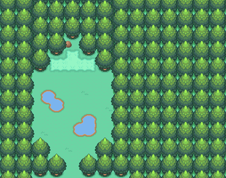

093 漆黑的魅影
一句话目标：在完成“海浪卷走的乌波”后，前往幻影之森 (8,5) 的调查点读完石上最后一段话，领取报酬。
接取地点
- 幻影之森（地图 56:43） 内的调查点，坐标 (8,5)。
- 当前目录描述：魅影终将消散，但信念与爱永不熄灭。
准备条件
- 需先完成“海浪卷走的乌波”（该任务的完成旗标 6139）；调查点的交付脚本只检查此旗标。
- 无其它道具或队伍要求。
操作步骤
- 完成“海浪卷走的乌波”后，到幻影之森 (56:43) 的 (8,5) 调查点触发。调查点先显示一句提示文本（文本地址 0x8D55C4F，未被解析，内容未定位）。
- 随后出现“仔细一看，后面还有一段话。”，并读到最后一句“魅影终将消散，但信念与爱永不熄灭。”
- 同时结算报酬：获得 4 BracerPoints 与 5000$，出现“完成任务:<漆黑的魅影>”，完成旗标 6149 置位。
- 再次调查该点只会重读“魅影终将消散，但信念与爱永不熄灭。”
交付检查
- 只需“海浪卷走的乌波”已完成（旗标 6139），在调查点读到最后一段话即判定完成。
奖励
- 4 BracerPoints
- 5000$
- （交付脚本另有一段
setvar 0x8000=1,0x8001=1,0x8002=28,0x8003=2后接callasm的未知调用；其语义未定位，不能据此认定为道具或宝可梦。）
容易卡住的位置
- 未完成“海浪卷走的乌波”时此调查点没有交付判定。
- 该点是剧情的收尾点，先在本任务目录下看到标题不代表有独立的接取对白；入口即调查点本身。
来源与待补
- 包：
data/quest_packets/093.json。 - 入口调查点脚本
0x08EC6E54；交付/报酬脚本0x08D55BFD。 - 未定位：首句文本地址 0x8D55C4F 未在 text.json 中解析；交付脚本中 0x8000–0x8003 变量写入后
callasm 0x89B…（值 144401489）的语义未定位；本点与“海浪卷走的乌波”的衔接仅由旗标 6139 证明。
地点地图
共享RGB底图；点击可缩放定位。数字对应本页相关地点，不代表地图上全部事件。
幻影之森

1 漆黑的魅影（8,5）